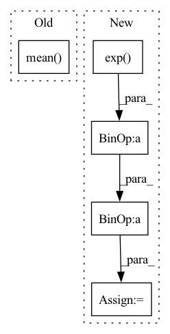

Pattern ID :14635
Before Change
loss = torch.sum(loss, dim=-1)
loss = torch.mean(loss, dim=0)
loss = torch.mean(self.alpha * loss)
return loss.mean()
class MutilDiceLoss(nn.Module):
After Change
if torch:
CE_loss = nn.CrossEntropyLoss(reduction="none", weight=self.alpha)
logpt = CE_loss(y_pred.float(), y_true.float())
pt = torch.exp( -logpt)
loss = (((1 - pt) ** self.gamma) * logpt).mean()
else:
// not work
// write version
In pattern: SUPERPATTERN
Frequency: 3
Non-data size: 5
Instances Fragment ID: 47989373
Project Name: junqiangchen/pytorchdeeplearing
Commit Name: 2d21a0e31327b055418cf5eaf6b21d2b1d5b916f
Time: 2022-06-22
Author: 1207173174@qq.com
File Name: model/losses.py
M Class Name: MutilFocalLoss
N Class Name: MutilFocalLoss
M Method Name: forward(3)
N Method Name: forward(3)
M Parent Class: nn.Module
N Parent Class: nn.Module
M File Name: model/losses.py
N File Name: model/losses.py
M Start Line: 154
M End Line: 167
N Start Line: 133
N End Line: 155
Before Change
if discrete:
alpha_loss = (-log_alpha * (a_dist.entropy() + target_entropy)).mean()
else:
alpha_loss = (
-log_alpha * a_dist.log_prob(a_dist.sample()).sum(-1, keepdim=True)
+ target_entropy
).mean()
optimizer.zero_grad()
alpha_loss.backward()
optimizer.step()
logs["alpha_loss"] = alpha_loss.item()After Change
alpha_loss = (-log_alpha.exp() * (-a_dist.entropy() + target_entropy)).mean()
else:
logp_a = a_dist.log_prob(a_dist.sample()).sum(-1, keepdim=True)
alpha_loss = (- log_alpha.exp() * (logp_a + target_entropy)).mean()
optimizer.zero_grad()
alpha_loss.backward()
optimizer.step() Fragment ID: 47989389
Project Name: jakegrigsby/super_sac
Commit Name: 367724d1609bad564a2e973772ef457527ad1730
Time: 2021-03-24
Author: jcg6dn@virginia.edu
File Name: uafbc/learning.py
M Class Name: AnonimousClass
N Class Name: AnonimousClass
M Method Name: alpha_update(9)
N Method Name: alpha_update(9)
M Parent Class:
N Parent Class:
M File Name: uafbc/learning.py
N File Name: uafbc/learning.py
M Start Line: 180
M End Line: 185
N Start Line: 181
N End Line: 189
Before Change
acc = self.a(z_)
if self.training or self.Z == None:
if i == 0:
Z_batch = torch.mean( acc)
Z_sum = torch.sum(acc).detach()
else:
Z_sum = Z_sum + torch.sum(acc).detach()
n = n + num_samplesAfter Change
n = 0
for i in range(self.T):
eps = torch.randn((num_samples, self.d), dtype=self.loc.dtype, device=self.loc.device)
z_ = self.loc + torch.exp( self.log_scale) * eps
acc = self.a(z_)
if self.training or self.Z == None: Fragment ID: 47989386
Project Name: vincentstimper/normalizing-flows
Commit Name: 7d58159119f4ea9785682b1726a8243124c84c04
Time: 2020-08-18
Author: vincent.stimper@gmail.com
File Name: normflow/distributions.py
M Class Name: ResampledGaussian
N Class Name: ResampledGaussian
M Method Name: forward(2)
N Method Name: forward(2)
M Parent Class: BaseDistribution
N Parent Class: BaseDistribution
M File Name: normflow/distributions.py
N File Name: normflow/distributions.py
M Start Line: 91
M End Line: 125
N Start Line: 93
N End Line: 129